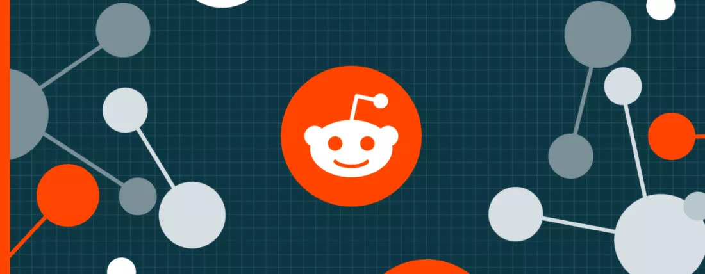
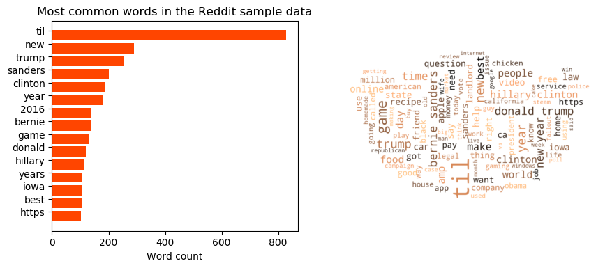
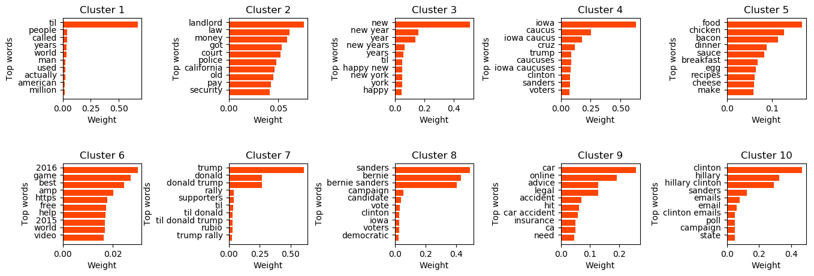
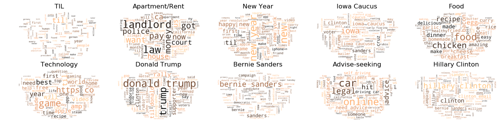
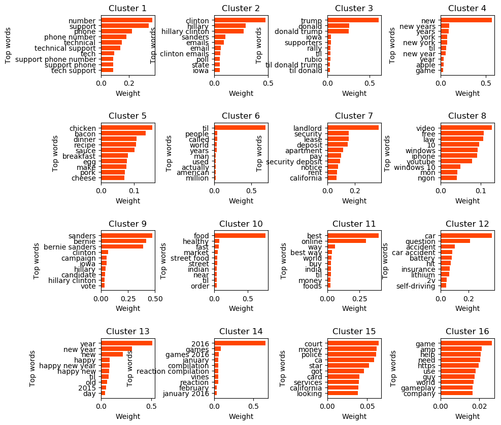
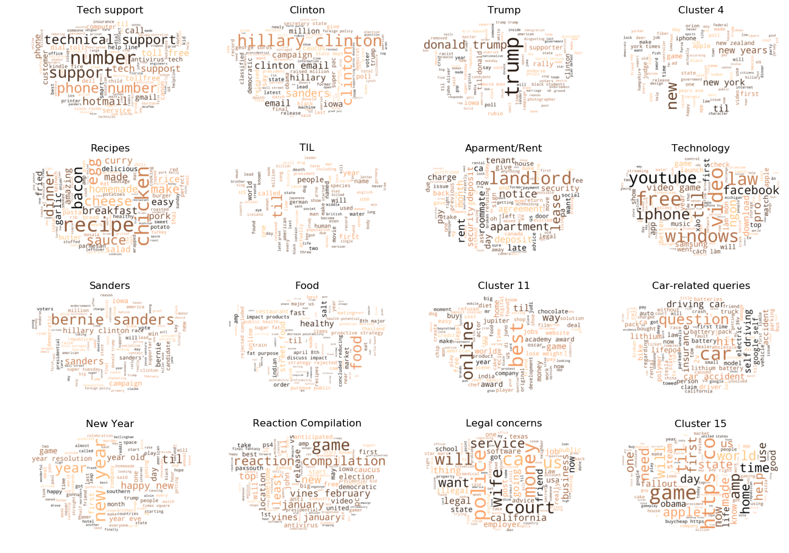

Identifying underlying themes in Reddit titles using non-supervised clustering
python
EDA
SQL
analysis
Published
April 23, 2022

Executive Summary
Original creation and submission for this notebook was last June 2019.
Reddit is an American discussion and aggregation website for user-generated content with more than 500 million monthly visitors. We uncovered the underlying categories or “subreddits” by performing representative-based clustering on a sample of Reddit titles. Results reveal that Reddit is a very American-centric platform and that the two main themes are (a) U.S. politics, and (b) seeking help from other Redditors on a wide range of topics including technology, food, and legal matters. For a small number of clusters (\(n=10\)), the high-level categories that emerged include the 2016 U.S. Presidential Elections (Donald Trump, Hillary Clinton, and Bernie Sanders), food, legal concerns, and “New year”-related subreddits. Increasing the number of clusters to \(n=16\) revealed more specific subreddits such as technical support, recipes, apartment/rental concerns, and reaction compilations.
Acknowledgements
This analysis was done together with my Lab partner, George Esleta, and Cohortmates - Gilbert Chua, Nigel Silva and Oonre Advincula-Go.
A. Introduction and the Problem Statement
Reddit is a discussion and content aggregation website. As of June 2019, it is ranked as the #5 most visited website in the United States and #15 worldwide. Registered members, also called “Redditors”, upload user-generated content (UGC) which are either voted up or voted down by other Redditors. Reddit posts are grouped into user-created boards or communities called “subreddits”, with each subreddit having a specific topic such as food, entertainment, and politics.
B. Methodology
Reddit titles and authors were scraped from the Reddit website and stored in a text file. The file is tab-delimited and has two columns: author and title. Flow of this notebook is as follows:
Pre-requisites: Load Requirement Package
Reading the Reddit data
Initial data cleaning
Exploratory data analysis
Vectorization (bag-of-words representation) using TFIDF Vectorizer
Dimensionality reduction using Latent Semantic Analysis (LSA)
Representative-based clustering using k-means
Pre-requisites: Load Requirement Package
Before anything else, let us first load all important modules for this exercise.
Loading required modules
# These are standard importsimport pandas as pdimport matplotlib.pyplot as pltimport numpy as npfrom collections import Counterfrom IPython.display import display_htmlfrom wordcloud import WordCloud, STOPWORDSfrom sklearn.preprocessing import StandardScalerfrom sklearn.feature_extraction.text import TfidfVectorizerfrom sklearn.feature_extraction import stop_wordsfrom sklearn.manifold import TSNEfrom sklearn.decomposition import TruncatedSVDfrom sklearn.metrics import calinski_harabaz_score, silhouette_scorefrom sklearn.cluster import KMeansfrom sklearn.pipeline import make_pipelinefrom sklearn.preprocessing import Normalizerfrom sklearn.metrics import confusion_matriximport nltkfrom nltk.tokenize import sent_tokenize, word_tokenizefrom nltk.stem.porter import PorterStemmerfrom nltk.corpus import stopwordsfrom nltk import FreqDist, RegexpTokenizerfrom IPython.display import HTMLfrom scipy.spatial.distance import euclideanfrom scipy.cluster.hierarchy import linkage, dendrogramfrom scipy.spatial.distance import euclidean, cityblockimport urllibimport requestsimport pprintfrom PIL import Imagepp = pprint.PrettyPrinter(indent=4)HTML('''<script>code_show=true; function code_toggle() { if (code_show){ $('div.input').hide(); } else { $('div.input').show(); } code_show = !code_show} $( document ).ready(code_toggle);</script><form action="javascript:code_toggle()"><input type="submit" value="Click here to toggle on/off the raw code."></form>''')
Reading the Reddit data
The data was stored in the ACCESS lab cloud computer (JOJIE). So for this instance, the sample Reddit text file was read using the read_csv function of pandas. In reading the file, tab (\t) separator was used, and the first line was skipped.
The resulting dataframe has two columns: author and title. A sample of the Reddit topics are shown below.
Tale 1: Sample Reddits from the Data
author
title
PrimotechInc
7 Interesting Hidden Features of apple ios9
xvagabondx
Need an advice on gaming laptop
nkindustries
Semi automatic ROPP Capping machine / ROPP Cap…
Philo1927
Microsoft Plumbs Ocean’s Depths to Test Underw…
tuyetnt171
OPPO F1 chính hãng - Fptshop.com.vn
Initial data cleaning
Once the Reddit data is stored in a dataframe, initial data cleaning was performed by converting all titles to lowercase, and removing leading and trailing spaces. Duplicate titles were also dropped.
The unique titles are then stored in a list:
Viewing the unique titles
df['title'] = df['title'].str.lower()df['title'] = df['title'].str.strip()docs =list(df.title.unique())pp.pprint('Number of titles: '+str(len(docs)))
'Number of titles: 5848'
After removing duplicates, there are 5848 unique Reddit titles in the sample dataset.
Sample cleaned topics are shown below. Note that there still are punctuation marks and special characters. These will be removed during vectorization.
[ '7 interesting hidden features of apple ios9',
'need an advice on gaming laptop',
'semi automatic ropp capping machine / ropp cap sealing machine',
'microsoft plumbs ocean’s depths to test underwater data center',
'oppo f1 chính hãng - fptshop.com.vn',
'stewed ramps w/ fixings in helvatia, wv',
'(california) is it a crime when a religious figure/ lecturer has '
'relations with one of his followers',
'being accused of public indecency, among other things. this is a '
'misunderstanding because i had health issues. [kansas, usa]',
'[us-ca/nv] my parents have been separated for almost 20 years, my mom '
'found out my dad divorced her without her knowledge a few years ago when '
'i was about 14--can she claim backdated child support?',
'skyrim ps4?']
Exploratory Data Analysis
Shown below are the top 15 most used words in the Reddit sample data. Note that the most common word is “TIL” (Today I Learned), followed by the names of prominent US politicians such as US President Donald Trump, 2016 presidential candidate Hillary Clinton, and Senator Bernie Sanders. All three of them figured prominently in the 2016 U.S. presidential elections, with Trump as the presidential nominee under the Republican party, while Clinton and Sanders as the Democratic party presidential candidates. Initial analysis of the data reveal that the 2016 U.S. Presidential Election is one of the primary themes in the sample Reddit data.
Viewing the unique titles
mask = np.array(Image.open('Icon-Reddit1.png'))tokenizer = RegexpTokenizer(r'\w{2,}')word_tokens = tokenizer.tokenize(' '.join(docs))stopword =set(stopwords.words('english') +list(stop_words.ENGLISH_STOP_WORDS))docs_filtered = [w for w in word_tokens ifnot w in stopword] counts = FreqDist(docs_filtered)labels, values =zip(*counts.items())indSort = np.argsort(values)[::]labels = np.array(labels)[indSort[-15:]]values = np.array(values)[indSort[-15:]]indexes = np.arange(len(labels))bar_width =0.35fig, ax = plt.subplots(1, 2, dpi=100, figsize = (10,4))ax[0].barh(indexes, values, color='#ff4500')ax[0].set_xlabel('Word count')ax[0].set_title('Most common words in the Reddit sample data')ax[0].set_yticks(indexes + bar_width);ax[0].set_yticklabels(labels);wordcloud = WordCloud(background_color="white", max_words=100, min_font_size=8, mask=mask, prefer_horizontal=0.6, colormap='copper', relative_scaling=.5).generate(' '.join(docs_filtered))ax[1].imshow(wordcloud, interpolation='bilinear')ax[1].axis('off');

FIGURE 1: (1) Frequency distribution of the top 15 words in the Reddit sample data, and (b) the corresponding wordcloud. Top words include TIL (Today I learned) and the names of 2016 US Presidential Aspirants (Donald Trump, Bernie Sanders, Hillary Clinton)
Vectorization/Bag-of-words representation
To uncover the other underlying themes apart from the 2016 U.S. Presidential Election, unsupervised clustering via k-means is performed on the collection of Reddit titles. To do this, the topics need to be vectorized or be converted to their bag-of-words representation. The TfidfVectorizer vectorizer was used to perform the vectorization.
The TFidfVectorizer also performs further cleaning of the data by removing both frequent words and rare words. Stopwords, or words that appear too frequently in the English language (e.g., the, a, an, and, or), were dropped from the corpus. Reddit-specific stopwords, or words that appear in more than 70% of the titles, were also ignored by setting the max_df parameter of TFidfVectorizer to \(0.7\).
Rare words, or words that appeared in less than 0.1% of the Reddit titles, were also excluded from the corpus. This was implemented by setting the min_df parameter of the TFidfVectorizer to \(0.001\).
n-grams of word lengths between \(n=1\) and \(n=3\) were extracted as part of the vocabulary. This range of n-grams was chosen in order to preserve the context of certain phrases such as “Hillary Clinton” (\(n=2\)), “Donald Trump” (\(n=2\)), and “Happy new year” (\(n=3\))
Using a TFIDF Vectorizer
# Creating a TF-IDF Vectorizertfidf_vectorizer = TfidfVectorizer(token_pattern=r'(?u)\b\w(?:\w|\-)+\b', stop_words=stopword, ngram_range=(1,3), min_df=0.001, max_df=0.7)# Creating a Bag-Of-Wordsbow = tfidf_vectorizer.fit_transform(docs)# Identifying the vocabularyvocabulary = tfidf_vectorizer.get_feature_names()
After vectorization, the sample of Reddit titles has 1,655 unique items in its vocabulary:
It would be computationally expensive to perform clustering on a dataset this large. To minimize computational power, dimensionality reduction was performed on the vectorized data via latent semantic analysis (LSA). This was implemented using the TruncatedSVD class of sklearn.
As a general rule for LSA, fewer dimensions allow for broader comparisons of the themes contained in a collection of text, while a higher number of dimensions enable more specific comparisons of themes. A dimesionality between 50 and 1,000 are suitable depending on the size and nature of the document collection, with \(300 \pm 50\) the optimum value. Unlike in other dimensionality reduction techniques such as principal component analysis (PCA), checking the proportion of variance retained to determine the optimal dimensionality is NOT applicable to LSA.
In this study, \(n_{components} = 100\) is used to extract the underlying themes.
Reduced dimensionality
For the purposes of this study, we reduced the dimensionality of the Reddit sample data to 100 components. The transformed Reddit dataset is shown below. Numerous subclusters are revealed, confirming that there are multiple categories or themes in the dataset.
Using a TruncatedSVD to reduce the number of components to 100 components, then getting bag of words, the using TSNE
tsvd1 = TruncatedSVD(n_components=100)normalizer = Normalizer(copy=False)lsa1 = make_pipeline(tsvd1, normalizer)# Getting the bag of wordsbow_tsvd1 = lsa1.fit_transform(bow)# Applying a TSNE modeltsne = TSNE(n_components=2, random_state=1704, n_iter=1500, n_iter_without_progress=500, perplexity=50, learning_rate=10)bow_tsne1 = tsne.fit_transform(bow_tsvd1)
Now, let’s make a graph on the TSNE model’s bag of words. Below you’ll see it flatted TSNE of the bag of words.
FIGURE 2: Reddit topics visualized in two dimensions using TSNE.
Representative-based clustering using k-means
Selecting the optimal number of clusters k
To determine the optimal number of clusters, we perform k-means clustering for different values of the cluster count \(k\) from \(k=2\) to \(k=20\). This range of values was chosen to keep the clustering parsimonious.
Several internal validation measures were computed for each value of \(k\). The internal validation measures that were used are (a) intracluster to intercluster distance ratio, (b) Calinski-Harabasz score (c) Silhouette coefficient, and (d) sum of square distances to centroids coefficient.
The optimal value of \(k\) is then chosen based on the following criteria:
Sum-of-square distance to centroid is minimized
Calinski-Harabasz index is maximized
Intracluster to intercluster distance ratio is minimized
Silhouette coefficient is maximized
Plotted below are the values of the internal validation criteria for values of \(k\) between 2 and 20. \(k = 10\) and \(k = 16\) are good candidates for the number of clusters because for these values, the intracluster to intercluster distance ratio has a local minima, and the silhouette coefficient has a relatively high value.
Function for computing intracluster to intercluster distance ratio
def intra_to_inter(X, y, dist, r):""" Compute intracluster to intercluster distance ratio Parameters ---------- X : array Design matrix with each row corresponding to a point y : array Class label of each point dist : callable Distance between two points. It should accept two arrays, each corresponding to the coordinates of each point r : integer Number of pairs to sample Returns ------- ratio : float Intracluster to intercluster distance ratio """ P = [] Q = [] p=0 q=0 np.random.seed(11) d = np.random.choice(range(0,len(X)), (r,2), replace=True)for a inrange(0,len(d)):if d[a][0] == d[a][1]:continueelif y[d[a][0]] == y[d[a][1]]: P.append(dist(X[d[a][0]],X[d[a][1]])) p+=1else: Q.append(dist(X[d[a][0]],X[d[a][1]])) q+=1iflen(P) ==0orlen(Q) ==0: ratio =0else: ratio = (np.sum(P)/len(P))/(np.sum(Q)/len(Q))return ratio
Function to create the clusters, cluster labels (and scores of internal validation values)
def cluster_range(X, clusterer, k_start=2, k_stop=16, actual=None):""" Accepts the design matrix, the clustering object, the initial and final values to step through, and, optionally, actual labels. It should return a dictionary of the cluster labels, internal validation values and, if actual labels is given, external validation values, for every k. Parameters ---------- X : design matrix clusterer : clustering object k_start : initial value of clusters k_stop : final value of clusters actual : actual labels Returns ------- dictionary """ validation_dict = {"chs": [],"iidrs": [],"inertias": [],"scs": [],"ys": [] }if actual isnotNone: validation_dict = {"chs": [],"iidrs": [],"inertias": [],"scs": [],"ys": [],"amis": [],"ars": [],"ps": [] }for k inrange(k_start, k_stop+1): clusterer.n_clusters = k np.random.seed(11) y_predict = clusterer.fit_predict(X) validation_dict["chs"].append(calinski_harabaz_score(X, y_predict)) validation_dict["iidrs"].append( intra_to_inter(X, y_predict, euclidean, 50)) validation_dict["inertias"].append(clusterer.inertia_) validation_dict["scs"].append(silhouette_score(X, y_predict)) validation_dict["ys"].append(y_predict)if actual isnotNone: validation_dict["amis"].append( adjusted_mutual_info_score(actual, y_predict)) validation_dict["ars"].append( adjusted_rand_score(actual, y_predict)) validation_dict["ps"].append(purity(actual, y_predict))return validation_dict
kmeans_dict1 = cluster_range(
# bag of words results
bow_tsvd1,
# using a k-means clusterer
KMeans(random_state=1704, n_init=20, max_iter=1000, tol=1e-6),
2,
20)
FIGURE 3: Plots of the various internal validation measures for \(k=2\) to \(k=20\). \(k=10\) and \(k=16\) were chosen because of the low intercluster-intracluster ration and the high silhouette coefficients for those values.
\(k\)-means clustering was performed on the Reddit sample titles using 10 clusters. The resulting clusters and the cluster size distribution are shown below. The clusters are relatives balanced in terms of cluster size, with the exception of one cluster (cluster 5) which contains more than 2500 Reddit titles.
FIGURE 4: Resulting clustering for \(n=10\), and the cluster size distribution per cluster. The clusters are relatives balanced in terms of cluster size, with the exception of one cluster (cluster 5) which contains more than 2500 Reddit titles.
To understand the theme or category of each cluster, the top words or the most frequent words for each cluster was obtained. Shown below are the top 10 most occurring words per cluster, and the corresponding wordclouds.
Code to see the top 10 most occuring words per cluster
features = tfidf_vectorizer.get_feature_names()weights = np.dot(kmeans1.cluster_centers_, tsvd1.components_)weights = np.abs(weights)fig, ax = plt.subplots(2,5, dpi=100, figsize=(16,5))plt.subplots_adjust(wspace=1.1, hspace=.8)for i inrange(kmeans1.n_clusters): indices = np.argsort(weights[i])[-10:][::] top_words = [features[index] for index in indices] values = weights[i,indices] indices = np.arange(len(top_words)) bar_width =0.35 ax[i//5][i%5].barh(indices, values, color='#ff4500') ax[i//5][i%5].set_xlabel('Weight') ax[i//5][i%5].set_ylabel('Top words') ax[i//5][i%5].set_yticks(indexes + bar_width); ax[i//5][i%5].set_yticklabels(top_words); ax[i//5][i%5].set_title('Cluster '+str(i+1))

FIGURE 5: Top 10 most occuring words per cluster (\(k=10\))
Code of placing a Reddit mask wordcloud
mask = np.array(Image.open('Icon-Reddit1.png'))topic = ['TIL', 'Apartment/Rent', 'New Year', 'Iowa Caucus', 'Food', 'Technology', 'Donald Trump', 'Bernie Sanders', 'Advise-seeking', 'Hillary Clinton']fig, ax = plt.subplots(2,5,dpi=100, figsize=(16,4))plt.subplots_adjust(wspace=.2, hspace=0)for ctr inrange(kmeans1.n_clusters): indices = [i for i, x inenumerate(y_predict_kmeans1) if x == ctr] wordcloud = WordCloud(background_color="white", max_words=100, min_font_size=8, mask=mask, prefer_horizontal=0.7, colormap='copper').generate(' '.join([docs[index] for index in indices])) ax[ctr//5][ctr%5].imshow(wordcloud, interpolation='bilinear') ax[ctr//5][ctr%5].axis('off'); ax[ctr//5][ctr%5].set_title(topic[ctr]);

FIGURE 6: Wordcloud per cluster (\(k=10\))
Using \(k = 10\), the general categories listed below were revealed. Sample Reddit titles for each category are also shown.
The clustering results show that Reddit is a very American-centric platform. Four of the ten topics are related to the 2016 U.S. Presidential Election, specifically on the Republican nominee Donald Trump, Democrat candidates Hillary Clinton and Bernie Sanders, and the Iowa caucuses, a biennial electoral event that marks the first major contest of the United States presidential primary season.
Also, two of the topics are related to “advise”. This reveals that apart from discussing politics, Reddit users go to Reddit to ask help or seek advise from other Redditors, whethere it be technology-related or legal.
Cluster topics:
TIL (Today I Learned)
[ 'til maternal kisses are not effective in alleviating minor childhood '
'injuries (boo-boos): a randomized, controlled and blinded study.',
'til goldman sachs did a study in 2009 that estimated a unified korea '
'could boast an economy larger than france, germany, and even japan by '
'2050 with a gdp of $6 trillion.',
"til the justice league's martian manhunter was once addicted to cookies "
'and hulked out when deprived of them.']
Apartment/rent-related topics
[ 'business telephone service',
'illegal towing from apartment complex md.',
'can a landlord place a security camera in a communal space']
“Happy new year”
[ 'new poll shows how far hillary has fallen with democrats',
'new zealand - new tenants wanting to take over internet account, isp is '
'refusing.',
'watch "best of maskedman - 2015 new year special." on youtube',
'happy new year reddit! :) i quit retirement, spent $250k in savings and '
'51 months (15,000 hours) to develop the new internet, owned by the '
'people, powered by humanity - the first company in history equally owned '
'by everybody alive! we are uniting the whole world into one!',
'til new yorkers at nye time square wear diapers and pads for lack of '
'porta potties']
“Iowa caucuses”
[ 'the gop’s condemnation of ‘sanctuary cities’ is surprisingly awkward in '
'iowa',
"jesse watters questions sanders' young supporters in iowa",
'2016 iowa democratic caucus locations - get out there and caucus!!']
Food
[ 'i have access to tons and tons of green onion tops,what can i make?',
'mexican chopped salad',
's&m restaurant in beijing caters to millennial’s basic instincts by '
'serving food & sex']
Donald Trump
[ "donald trump says he'll attract democrats; polls say that's unlikely",
'inside the clintons’ plan to defeat donald trump',
'hecklers disrupt trump rally, photographer shoved to the ground']
Bernie Sanders
[ '“it appears that mr. trump is getting nervous that working families are '
'catching on that his policies represent the interests of the billionaire '
'class against almost everyone else." - bernie sanders',
'killer mike: bernie sanders is the only candidate for black voters',
'bernie sanders: the most fascist candidate of all.']
Food
[ 'i have access to tons and tons of green onion tops,what can i make?',
'mexican chopped salad',
's&m restaurant in beijing caters to millennial’s basic instincts by '
'serving food & sex']
Advise-seeking
[ 'need an advice on gaming laptop',
'charged with dui 2 years and 4 months after i was involved in a single '
'car accident.',
"i'd like to buy the rights of a post on reddit to recreate in another "
'medium. how do i create a legal contract for this between strangers '
'online?',
'significant online food ordering trend',
'md - need advice evicting a suicidal/alcoholic tenant/roommate.']
Hillary Clinton
[ 'semi automatic ropp capping machine / ropp cap sealing machine',
'state: hundreds of old clinton emails newly classified',
'georgia poll: clinton 70, sanders 23']
FIGURE 7. Clustering and Cluster size distribution for \(k=16\))
To understand the theme or category of each cluster, the top words or the most frequent words for each cluster was obtained. Shown below are the top 10 most occurring words per cluster, and the corresponding wordclouds.
Code to see the top words per 16 clusters
features = tfidf_vectorizer.get_feature_names()weights = np.dot(kmeans2.cluster_centers_, tsvd1.components_)weights = np.abs(weights)fig, ax = plt.subplots(4,4, dpi=100, figsize=(10,10))plt.subplots_adjust(wspace=1.1, hspace=.8)for i inrange(kmeans2.n_clusters): indices = np.argsort(weights[i])[-10:][::] top_words = [features[index] for index in indices] values = weights[i,indices] indices = np.arange(len(top_words)) bar_width =0.35 ax[i//4][i%4].barh(top_words, values, color='#ff4500') ax[i//4][i%4].set_xlabel('Weight') ax[i//4][i%4].set_ylabel('Top words')# ax[i//4][i%4].set_yticks(indexes + bar_width); ax[i//4][i%4].set_yticklabels(top_words); ax[i//4][i%4].set_title('Cluster '+str(i+1))

FIGURE 8. Top 10 most frequest words per cluster (\(k=16\))
Code of placing a Reddit mask wordcloud for k=16
topics1 = ['Tech support', 'Clinton', 'Trump', 'Cluster 4', 'Recipes', 'TIL', 'Aparment/Rent', 'Technology' , 'Sanders', 'Food', 'Cluster 11', 'Car-related queries', 'New Year', 'Reaction Compilation', 'Legal concerns', 'Cluster 15']fig, ax = plt.subplots(4,4,dpi=100, figsize=(16,12))plt.subplots_adjust(wspace=0.2, hspace=0)for ctr inrange(kmeans2.n_clusters): indices = [i for i, x inenumerate(y_predict_kmeans2) if x == ctr] wordcloud = WordCloud(background_color="white", max_words=100, min_font_size=8, mask=mask, prefer_horizontal=0.6, colormap='copper').generate(' '.join([docs[index] for index in indices])) ax[ctr//4][ctr%4].imshow(wordcloud, interpolation='bilinear') ax[ctr//4][ctr%4].axis('off'); ax[ctr//4][ctr%4].set_title(topics1[ctr]);

FIGURE 9. Wordcloud per cluster (\(k=16\))
As the number of clusters was increased, the more specific themes emerge. The following themes emerged:
Technical Support
[ 'smoothly solution for the canon printer 1-877-776-4348',
'follow these step and escan antivirus easily',
'norton antivirus technical support phone number',
'itech logik | uk microsoft help desk phone number',
'til tupak shakur became the first artist to have an album at number one '
'on the billboard 200 while serving a prison sentence.']
Hillary Clinton Emails
[ 'semi automatic ropp capping machine / ropp cap sealing machine',
'state: hundreds of old clinton emails newly classified',
'georgia poll: clinton 70, sanders 23',
'nsa whistleblower: clinton email server was ‘open to being hacked by '
'anybody in the world’',
"hillary clinton's new hampshire boosters out in full force"]
Donald Trump
[ "donald trump says he'll attract democrats; polls say that's unlikely",
'inside the clintons’ plan to defeat donald trump',
'hecklers disrupt trump rally, photographer shoved to the ground',
'a photographer covering a donald trump rally in virginia said a secret '
'service agent choked him and slammed him to the ground monday as he tried '
'to leave a media pen at the event where a protest erupted.',
'til that donald trump sold steaks at the sharper image']
Recipes
[ 'i have access to tons and tons of green onion tops,what can i make?',
'mexican chopped salad',
'dublin, ireland has gone mad for spice bags from takeaways, i tried my '
'hand at my own. potato, shredded chicken, peppers and onions, cooked in '
'garlic, chillies and spices. apologies for photo quality!',
'tips for starting a healthy lifestyle!',
"arroz carreteiro - brazilian wagoners' rice gourmetcentric"]
TIL (Today I learned) topics
[ 'til maternal kisses are not effective in alleviating minor childhood '
'injuries (boo-boos): a randomized, controlled and blinded study.',
'til goldman sachs did a study in 2009 that estimated a unified korea '
'could boast an economy larger than france, germany, and even japan by '
'2050 with a gdp of $6 trillion.',
"til the justice league's martian manhunter was once addicted to cookies "
'and hulked out when deprived of them.',
'til that the top 25 hedge fund managers in the us earn more than all us '
'kindergarten teachers (and pay a smaller tax rate)',
'til leonard howell ("the first rasta") preached that ras tafari, the '
'emperor of ethiopia in 1933, was the messiah, that black people were the '
'chosen of god and that they would soon be restored to their native '
'country of ethiopia.']
Apartment and Rent Concerns
[ 'my dad died yesterday and my mom is now being evicted because she is not '
'on the lease, what can she do?',
'landlord charged my girlfriend a damage fee of $5,000 for a broken door',
'is refusing to take a breathalyzer test an admission of guilt?',
'does an apartment with living/housing code violations against the city '
'equal a nullified lease?',
'had verbal agreement with room mate for payment of back monies to be '
'paid, to be formalized in writing, questions, etc.']
Bernie Sanders
[ '“it appears that mr. trump is getting nervous that working families are '
'catching on that his policies represent the interests of the billionaire '
'class against almost everyone else." - bernie sanders',
'killer mike: bernie sanders is the only candidate for black voters',
'hillary clinton has already forgotten about bernie sanders | vice | '
'united states',
'bernie sanders ‘revolution’ threatens hillary clinton in iowa.',
"jesse watters questions sanders' young supporters in iowa"]
Food
[ 'semi automatic ropp capping machine / ropp cap sealing machine',
'state: hundreds of old clinton emails newly classified',
'georgia poll: clinton 70, sanders 23']
Bernie Sanders
[ '“it appears that mr. trump is getting nervous that working families are '
'catching on that his policies represent the interests of the billionaire '
'class against almost everyone else." - bernie sanders',
'killer mike: bernie sanders is the only candidate for black voters',
'bernie sanders: the most fascist candidate of all.']
Food
[ 'significant online food ordering trend',
's&m restaurant in beijing caters to millennial’s basic instincts by '
'serving food & sex',
'food near me – jasper arkansas',
'as i am very polish and grew up eating a lot of good food, i decided to '
'cook it for myself tonight.',
'food in thailand - november 2015']
Car-related topics
[ 'charged with dui 2 years and 4 months after i was involved in a single '
'car accident.',
"[md] car impounded after repair order wasn't received in september, "
'options?',
'tesla unveils the model 3, its lowest-priced car',
'lincolnshire county council hit by £1m malware demand',
'florida adverse possession law question and others regarding married but '
'separate couples.']
“Happy new year” reddits
[ 'watch "best of maskedman - 2015 new year special." on youtube',
'happy new year reddit! :) i quit retirement, spent $250k in savings and '
'51 months (15,000 hours) to develop the new internet, owned by the '
'people, powered by humanity - the first company in history equally owned '
'by everybody alive! we are uniting the whole world into one!',
'mobile game of the year 2015: horizon chase',
'til that j. r. r. tolkien hand wrote and illustrated letters to his '
'children from father christmas every year for 20 years.',
'[bellingham, wa] wife looking at buying property in bella coola, bc; '
'legal implications of living half the year here in bellingham and half '
'the year in bella coola']
Vines reaction compilation
[ 'happy 2016 and may all your games be mostly bug free',
'eight issues that could shape politics in 2016',
'2016 iowa democratic caucus locations - get out there and caucus!!',
'♥ dragonsden vines 🔒 - february 1, 2016 🔱 dragonsden reaction compilation '
'🎨',
'ark: surival evolved rings in 2016 with giant, rideable kangaroos']
Legal concerns
[ '(california) is it a crime when a religious figure/ lecturer has '
'relations with one of his followers',
'being accused of public indecency, among other things. this is a '
'misunderstanding because i had health issues. [kansas, usa]',
"[philadelphia, pa] i'm concerned that something suspicious is going on at "
"my neighbor's house. i'd like to know if there's enough probable cause "
'for the police to investigate.',
"refugee's treated worse than dogs!",
'i have a great idea for a trpg.']
Conclusions and Recommendations
The clustering results show that Reddit is a very American-centric platform. Majority of the topics are related to the 2016 U.S. Presidential Election, specifically on the Republican nominee Donald Trump, Democrat candidates Hillary Clinton, and the Iowa caucuses.
Also, the results show that the two primary motivations of users to post in Reddit is (a) to discuss politics, and (b) to seek advise/ask help from other Redditors, whether technological, legal, or culinary in nature.
Increasing the number of clusters also reveal more specific topics such as ‘technical support’ and ‘’Vines reaction compilation videos’.
For future studies, it is suggested to perform hierarchical clustering.